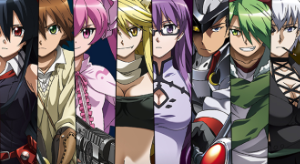
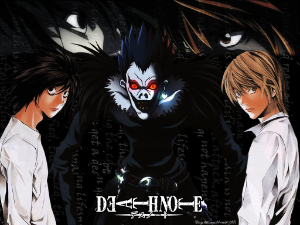
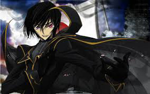
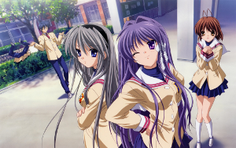
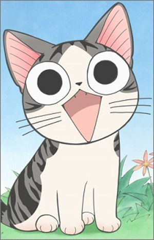
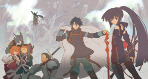

| Knowledge Base Rules for What Anime Should I Watch Expert System |
|---|
| # | Rule | Notes | Image |
| 0 | If age adult
and if genre comedy
and if series Length short
then the Anime is Bludgeoning Angle Dokoro-Chan. | Bokustsu tenshi Dokuro-chan, aka Club-to-Death Angel Dokuro-chan, is about a boy named Sakura Kusakabe who lives with an angel named Dokuro(or Dokuro-chan as they call her). Dokuro's like any normal angel, she uses magical powers to turn people into animals, she likes to torture people, oh, and she carries around a spiked metal bat that she beats people to death with, of course using her magical "Pipiru piru piru pipiru pi" spell to revive them again. Sakura has to worry enough with Dokuro-chan killing him all the time, but there's also other angels planning to kill him without reviving him again. Can he avoid his ill-fated demise? |  |
| 1 | If age adult
and if genre comedy
and if series Length medium
then the Anime is To Love Ru. | The story is about Yuuki Rito, a high-school boy who cannot confess to the girl of his dreams, Sairenji Haruna. One day when coming home and sulking in the bath-tub a mysterious, nude girl, appears out of nowhere. Her name is Lala and she comes from the planet Deviluke, where she is the heir to the throne. Her father wants her to return to her home planet so she can marry one of the husband candidates, but she decides that she wants to marry Rito in order to stay on Earth. | |
| 2 | If age adult
and if genre dark Fantasy
and if series Length short
then the Anime is Akame ga Kiru. | A young countryside boy sets to the capital with the dream to become part of the country army. Unsuccessful he encounters a women who promises him a chance to enter the army if he pays her enough, the young boy unaware gives all his money and then finds out the he was tricked. Not having any money decides to sleep in the streets, the same night a young and beautiful women picks him op from the street and takes him home. Tatsumi stays a night since they promise him a position in the army as well. One night the house is visited by a group of assassins called night raid but who are the real bad guys of this story. Tatsumi ends up joining night raid and finds out that he identifies his self in this group more then in the army. |  |
| 3 | If age adult
and if genre dark Fantasy
and if series Length medium
then the Anime is Tokyo Ghoul. | The suspense horror/dark fantasy story is set in Tokyo, which is haunted by mysterious "ghouls" who are devouring humans. People are gripped by the fear of these ghouls whose identities are masked in mystery. An ordinary college student named Kaneki encounters Rize, a girl who is an avid reader like him, at the café he frequents. Little does he realize that his fate will change overnight. | |
| 4 | If age adult
and if genre horror
and if series Length short
then the Anime is Another. | While at school, Taniyama Mai and her friends like to exchange ghost stories. Apparently, there is an abandoned school building on their campus that is the center of many ghost stories. During the story, they are interrupted by a mysterious male figure. The person turns out to be Shibuya Kazuya, a 17-year-old who is president of the Shibuya Psychic Research Company. He was called by the principal to investigate the stories surrounding the abandoned school building. The next day, on the way to school, Mai passes the school building in question. While examining a strange camera she spotted inside, she gets surprised by Kazuya's assistant. Unknowingly interfering with the investigation, Mai breaks the camera and Kazuya's assistant gets injured. Kazuya forcefully hires Mai in order to pay for the camera and replace his injured assistant. From that point on, Mai begins to learn about the paranormal world and the profession of ghost hunting. | |
| 5 | If age adult
and if genre horror
and if series Length medium
then the Anime is Higurashi no Naku Koro ni. | Higurashi no Naku Koro ni is a story of many chapters. It's about the town of Hinamizawa, and the people who live there, Rena Ryugu, Mion Sonozaki, Satoko Hojo, and Rika Furude, as well as friends, relatives, and visitors dealing with Lord Oyashiro's curse. Every year on the night of Watanagashi, people mysteriously disappear and are murdered which is rumored to be a curse, though it has yet to be proven. However, certain people don't believe it, especially with the odd behaviors of some of of the residents of Hinamizawa. This story is explained in many Question and Answer chapters. |  |
| 6 | If age adult
and if genre mystery
and if series Length short
then the Anime is Parasyte: The Maxim. | The 17-year-old Izumi Shinichi lives with his mother and father in a quiet neighborhood in Tokyo. One night, worm-like aliens called Parasytes invade Earth, taking over the brains of human hosts by entering through their ears or noses. One Parasyte attempts to crawl into Shinichi's ear while he sleeps, but fails since he is wearing headphones, and enters his body by burrowing into his arm instead, taking over his right hand and is named Migi. Because Shinichi was able to prevent Migi from traveling further up into his brain, both beings retain their separate intellect and personality. As the duo encounter other Parasytes, they capitalize on their strange situation and gradually form a strong bond, working together to survive. This gives them an edge in battling other Parasytes, who frequently attack the pair upon realization that Shinichi's human brain is still intact. Shinichi feels compelled to fight other Parasytes, who devour humans as food, while enlisting Migi's help. |  |
| 7 | If age adult
and if genre mystery
and if series Length medium
then the Anime is Death Note. | After an intelligent yet cynical high school student begins to cleanse the world from evil with the help of a magical notebook that can kill anyone whose name is written on it, international authorities call upon a mysterious detective known as "L" to thwart his efforts. |  |
| 8 | If age adult
and if genre science Fiction
and if series Length short
then the Anime is Physco Pass. | In a futuristic world where criminal intent is analyzed by the Sybil System, a new top of the class recruit, Akane Tsunemori, joins the police force; however, she always puts her own sense of justice above the judgment of Sybil. Police are helped by Enforcers (latent criminals disposed to high criminal intent), one of which is a former inspector who supports Akane's method of action. | |
| 9 | If age adult
and if genre science Fiction
and if series Length medium
then the Anime is Code Geass. | The Empire of Britannia has invaded Japan using giant robot weapons called Knightmare Frames. Japan is now referred to as Area 11, and its people the 11's. A Britannian who was living in Japan at the time, Lelouch, vowed to his Japanese friend Suzaku that he'd destroy Britannia. Years later, Lelouch is in high school, but regularly skips out of school to go play chess and gamble on himself. One day, he stumbles on terrorists 11's who've stolen a military secret and is caught by a member of the Britannian task force sent after them, who is Suzaku. As the rest of the squad arrives, Suzaku is shot for disobeying orders, while the military secret, a young immortal witch, gives Lelouch the power of Geass, which makes anyone obey any order. While Suzaku is secretly made the pilot of Britannia's brand new prototype Knightmare, Lancelot, Lelouch becomes the masked Zero to lead the rebellion to destroy Britannia once and for all. |  |
| 10 | If age adult
and if genre survival
and if series Length short
then the Anime is Another. | Twenty-six years ago, in a third-year classroom of a middle school, there was a student named Misaki. As an honors student who was also good at sports, the charming girl was popular with her classmates. When she suddenly died, her classmates decided to carry on as if she was still alive until graduation. Then, in the spring of 1998, a boy named Sakakibara Kouichi transfers to that classroom, and he grows suspicious of the fearful atmosphere in that classroom. In particular, there is a beautiful, aloof girl named Mei Misaki who wears an eye-patch and is always alone drawing pictures. | |
| 11 | If age adult
and if genre survival
and if series Length medium
then the Anime is Future Diary. | Yukiteru Amano is a 14-year old loner who spends much of his time dispassionately recording events around him in his cell phone "diary." His only friends are imaginary ones: Dues ex Machina, the "god of time and space," and Murmur, Dues's impish helper. Yukiteru's life takes a turn for the strange when his diary starts recording events before they happen and Dues announces that he's not so imaginary after all, and a turn for the sinister when his diary announces his own impending death. It turns out Yukiteru has become part of a survival game in order to determine who will succeed Dues as the god of time and space, competing with 11 others who also possess diaries that predict the future in various ways,. But Yukiteru does have at least one strong ally: Yuno Gasai, a fellow classmate who despite being a Future Diary holder herself is determined to protect Yukiteru at all costs. She's also an obsessive and possibly crazy stalker who's own Future Diary records Yukiteru's every move in . | |
| 12 | If age teenager
and if genre fantasy
and if series Length short
then the Anime is Kyoukai no Kanata. | The dark fantasy follows a high school sophomore named Akihito Kanbara. Although the boy appears human, he is half Youmu and invulnerable to wounds because he can heal quickly. One day, Akihito meets freshman Mirai Kuriyama when it seems she is about to jump from the school rooftop. Mirai is isolated because of her ability to manipulate blood, which is considered heresy among members of the spirit world. Disturbing events begin to unfold after Akihito saves Mirai. | |
| 13 | If age teenager
and if genre fantasy
and if series Length medium
then the Anime is Fate/ Stay Night. | There is a war going on between masters and servants in order to attain the Holy Grail. Each master can call up one servant each, and their task is to eradicate the other servants, either by defeating them or killing their master. When there is only one master or servant left, he or she is granted the Holy Grail, and any wish they desire will come true. | |
| 14 | If age teenager
and if genre jump
and if series Length medium
then the Anime is World Trigger. | A gate to another dimension has burst open, and from it emerge gigantic invincible creatures that threaten all of humanity. Earth's only defense is a mysterious group of warriors who have co-opted the alien technology in order to fight back! |  |
| 15 | If age teenager
and if genre jump
and if series Length long
then the Anime is Bleach. | High school student Kurosaki Ichigo is unlike any ordinary kid. Why? Because he can see ghosts. Ever since a young age, he's been able to see spirits from the afterlife. Ichigo's life completely changes one day when he and his two sisters are attacked by an evil, hungry and tormented spirit known as a Hollow. Right in the nick of time, Ichigo and his siblings are aided by a Shinigami (Death God) named Kuchiki Rukia, whose responsibility it is to send good spirits (Pluses) to the afterlife known as Soul Society, and to purify Hollows and send them up to Soul Society. But during the fight against the Hollow, Rukia is injured and must transfer her powers to Ichigo. With this newly acquired power, so begins Kurosaki Ichigo's training and duty as a Shinigami to maintain the balance between the world of the living and the world of the dead. |  |
| 16 | If age teenager
and if genre mystery
and if series Length short
then the Anime is Hyouka. | Houtarou is usually quite apathetic, however his sister forced him to join the classic literature club. Once there he discovers some information regarding an incident surrounding one of the members' uncle. Together with an inquisitive girl this unassertive boy delves deeper into this mystery. | |
| 17 | If age teenager
and if genre mystery
and if series Length medium
then the Anime is Umineko. | A family reunion is held on a secluded island. The dying patriarch wants to see his lost love one last time, so he tries summoning her with black magic and that's when the murders begin. | |
| 18 | If age teenager
and if genre romance
and if series Length short
then the Anime is Angle Beats. | Upon his death, Yuzuru Otonashi awakens into an afterlife high school where a group of student rebels, lead by Yuri Nakamura, take arms against a dispassionate adversary with supernatural powers whom they call Angel. Calling themselves Shinda Sekai Sensen (a.k.a. Afterlife Battlefront), they're in open rebellion against God for their crappy, unfulfilled and cruelly unfair lives (and against a projected reincarnated future as meager sea life, presumably barnacles or water fleas). Though no one can die since everyone's already dead, killings are nonetheless very painful experiences, with complete recovery to follow. The greatest fear in their struggle to maintain their humanity is obliteration (Angel's goal for them), from which there is no return. | |
| 19 | If age teenager
and if genre romance
and if series Length medium
then the Anime is Clannad. | A high school student who cares little about school or others meets a lonely girl who had to repeat a year while all her friends finished high school. He decides to hang out with her and soon meets more friendly students. |  |
| 20 | If age child
and if genre comedy
and if series Length short
then the Anime is Place to Place. | Everyone has a circle of friends they hang out with. But even within a small group there are smaller groups of friends, best friends and, here's where it gets complicated, boyfriends and girlfriends. Sometimes relationships just develop in a way where you're not exactly sure what you are to the other person. Which is the problem Tsumiki has when it comes to Io. Io's as tall and easygoing as Tsumiki is short in both temper and stature, but he also seems to be totally clueless about how she's starting to feel. Yet, at times, he's almost too affectionate. It's just confusing and irritating. And their prankster friends Mayoi and Sakaki aren't much help. Especially Mayoi, as it gives her one more thing to tease Tsumiki over. Hime, the fifth member of their usual gang of five isn't much better, because she's not really well connected to reality anyway. Which leaves Tsumiki stuck in a quandary. Are she and Io just best friends? And is it worth risking that for what Tsumiki wants? |  |
| 21 | If age child
and if genre comedy
and if series Length long
then the Anime is Chi's New Adress. | The story follows a cute little cat named Chi and his fun family friendly adventures. |  |
| 22 | If age child
and if genre fantasy
and if series Length medium
then the Anime is Soul Eater. | Set in the Shinigami technical school for weapon meisters, the series revolves around 3 groups of each a weapon meister and a human weapon. Trying to make the latter a "Death Scythe" and thus fit for use by the Shinigami, they must collect the souls of 99 evil humans and 1 witch. |  |
| 23 | If age child
and if genre fantasy
and if series Length long
then the Anime is Pokemon. | Ten-year-old Ash aspires to be the greatest Pokémon (pocket monster) trainer in the world. To do this, he enlists the help of two friends, Misty and Brock, and his own Pokémon, Pikachu. Together, they must search their world for all 150 Pokémon, while avoiding the likes of Team Rocket and their Pokémon, Meowth. |  |
| 24 | If age child
and if genre slice of Life
and if series Length medium
then the Anime is Miyakawa-ke no Kufuku'. | A spin-off of Lucky Star. Centers around big sister Hinata Miyakawa and little sister Hikage Miyakawa's impoverished daily life at home (due to Hinata's wasteful habits) and Hikage's life at elementary school. |  |
| 25 | If age child
and if genre slice of Life
and if series Length long
then the Anime is Lucky Star. | Having fun in school, doing homework together, cooking and eating, playing videogames, watching anime. All those little things make up the daily life of the anime—and chocolate-loving—Izumi Konata and her friends. Sometimes relaxing but more than often simply funny! | |
| 26 | If age all
and if genre adventure
and if series Length medium
then the Anime is Full Metal Alchemist. | Edward Elric, a young, brilliant alchemist, has lost much in his twelve-year life: when he and his brother Alphonse try to resurrect their dead mother through the forbidden act of human transmutation, Edward loses his family as well as two of his limbs. With his supreme alchemy skills, Edward binds Alphonse's soul to a large suit of armor. A year later, Edward, now promoted to the fullmetal alchemist of the state, embarks on a journey with his younger brother to obtain the Philosopher's Stone. The fabled mythical object is rumored to be capable of amplifying an alchemist's abilities by leaps and bounds, thus allowing them to override the fundamental law of alchemy: to gain something, an alchemist must sacrifice something of equal value. Edward hopes to draw into the military's resources to find the fabled stone with his power and restore his and Alphonse's bodies to normal. However, the Elric brothers soon discover that there is more to the legendary stone than meets the eye, as they are led to the epicenter of a far darker battle than they could have ever imagined. |  |
| 27 | If age all
and if genre adventure
and if series Length long
then the Anime is Gintama. | Life isn't easy in feudal Japan... especially since the aliens landed and conquered everything! Oh sure, the new health care is great, but the public ban on the use of swords has left a lot of defeated samurai with a difficult decision to make concerning their future career paths! This is especially true if, as in the case of Gintoki Sakata, they're not particularly inclined towards holding a day job, which is why Gintoki's opted for the freelance route, taking any job that's offered to him as long as the financial remuneration sounds right. Unfortunately, in a brave new world filled with stray bug-eyed monsters, upwardly mobile Yakuza and overly ambitious E.T. entrepreneurs, those jobs usually don't pay as well as they should for the pain, suffering and indignities endured! |  |
| 28 | If age all
and if genre fantasy
and if series Length short
then the Anime is Gate: And so the Japanese Self Defence Force Fought. | In August of 20XX, a portal to a parallel world, known as the "Gate," suddenly appeared in Ginza, Tokyo. Monsters and troops poured out of the portal, turning the shopping district into a bloody inferno. The Japan Ground-Self Defence Force immediately took action and pushed the fantasy creatures back to the "Gate." To facilitate negotiations and prepare for future fights, the JGSDF dispatched the Third Reconnaissance Team to the "Special Region" at the other side of the Gate. Youji Itami, a JSDF officer as well as a 33-year-old otaku, was appointed as the leader of the Team. Amid attacks from enemy troops the team visited a variety of places and learnt a lot about the local culture and geography. Thanks to their efforts in humanitarian relief, although with some difficulties they were gradually able to reach out to the locals. They even had a cute elf, a sorceress and a demigoddess in their circle of new friends. On the other hand, the major powers outside the Gate such as the United States, China, and Russia were extremely interested in the abundant resources available in the Special Region. They began to exert diplomatic pressure over Japan. A suddenly appearing portal to an unknown world—to the major powers it may be no more than a mere asset for toppling the international order. But to our protagonists it is an invaluable opportunity to broaden knowledge, friendship, and ultimately their perspective towards the world. | |
| 29 | If age all
and if genre fantasy
and if series Length medium
then the Anime is Log Horizon. | By its eleventh expansion pack, the massively multiplayer online role-playing game Elder Tale has become a global success, having a following of millions of players. However, during the release of its twelfth expansion pack: Novasphere Pioneers, thirty thousand Japanese gamers who are all logged on at the time of the update, suddenly find themselves transported inside the game world and donning their in-game avatars. In the midst of the event, a socially awkward gamer called Shiroe along with his friends Naotsugu and Akatsuki decide to team up so that they may face this world which has now become their reality along with the challenges which lie ahead. |  |
| 30 | If age all
and if genre harem
and if series Length short
then the Anime is Absolute Duo. | After a traumatic accident takes his loved one, Tooru Kokonoe enrolls Kouryou Academy, a school where every student has a weapon that is their soul manifestation. Fueled by his desire for revenge, Tooru is dismayed to discover his soul is not a weapon… but a shield. | |
| 31 | If age all
and if genre harem
and if series Length medium
then the Anime is The World God Only Knows. | Keima Katsuragi, known online as the legendary "God of Conquest," can conquer any girl's heart—in dating sim games, at least. In reality, he opts for the two-dimensional world of gaming over real life because he is an unhealthily obsessed otaku of galge games (a type of Japanese video game centered on interactions with attractive girls). When he arrogantly accepts an anonymous offer to prove his supremacy at dating sim games, Keima is misled into aiding a naïve and impish demon from hell named Elucia "Elsie" de Lute Ima with her mission: retrieving runaway evil spirits who have escaped from hell and scattered themselves throughout the human world. Keima discovers that the only way to capture these spirits is to conquer what he hates the most: the unpredictable hearts of three-dimensional girls! Shackled to Elsie via a deadly collar, Keima now has his title of "God of Conquest" put to the ultimate test as he is forced to navigate through the hearts of a multitude of real-life girls. |  |
| 32 | If age all
and if genre neo-Noir
and if series Length short
then the Anime is Trigun. | Vash the Stampede is a wanted man with a habit of turning entire frontier towns into rubble. The price on his head is a fortune, and his path of destruction reaches across the arid wastelands of a desert planet. Unfortunately, most encounters with the spiky-haired gunslinger don't end well for the bounty hunters who catch up with him; someone almost always gets hurt—and it's never Vash. Oddly enough, for such an infamous fugitive, there's no proof that he's ever taken a life. In fact, he's a pacifist with a doughnut obsession who's more doofus than desperado. There's a whole lot more to him than his reputation lets on—Vash the Stampede definitely ain't your typical outlaw. |  |
| 33 | If age all
and if genre neo-Noir
and if series Length medium
then the Anime is Cowboy Bebop. | The year 2071 A.D. That future is now. Driven out of their terrestrial eden, humanity chose the stars as the final frontier. With the section-by-section collapse of the former nations a mixed jumble of races and peoples came. They spread to the stars, taking with them the now confused concepts of freedom, violence, illegality and love, where new rules and a new generation of outlaws came into being. People referred to them as Cowboys. Meet Spike and Jet, a drifter and a retired cyborg cop who have started a bounty hunting operation. In the converted ship The Bebop, Spike and Jet search the galaxy for criminals with bounties on their heads. They meet a lot of unusual characters, including the unusually intelligent dog, Ein, and the voluptuous and vexing femme fatale, Faye Valentine. |  |
| 34 | If age all
and if genre romance
and if series Length short
then the Anime is Amnesia. | This story takes place in a fictional town, in a fictional country, in a fictional world. One morning, a young lady awakens to find that she has lost all her memories prior to that morning. Her life, her relationships, her very name—all gone. All that's left is a cell phone with numbers and names she doesn't recognize and Orion, a young boy that only she appears to be able to see. With Orion's guidance, she struggles to make sense of herself, a boyfriend she doesn't know and the thousand and one little things that make up a daily life. But with no memories left, the only alternative is to forge new ones, even if that means leaving old loves behind. |  |
| 35 | If age all
and if genre romance
and if series Length medium
then the Anime is chuunibyou. | Yuuta Togashi suffered from chuunibyou while he was in middle school. When he graduated, he put that dark history behind him and forgot about it... or he was supposed to. High school was smooth sailing and full of enjoyment—until the unavoidable, sad event occurs. The event that locks Yuuta into a contract with Rikka Takanashi and disrupts his desperately ordinary life. | |
| 36 | If age all
and if genre science Fiction
and if series Length short
then the Anime is No Game No Life. | No Game No Life is a surreal comedy that follows Sora and Shiro, shut-in NEET siblings and the online gamer duo behind the legendary username "Kuuhaku." They view the real world as just another lousy game; however, a strange e-mail challenging them to a chess match changes everything—the brother and sister are plunged into an otherworldly realm where they meet Tet, the God of Games. The mysterious god welcomes Sora and Shiro to Disboard, a world where all forms of conflict—from petty squabbles to the fate of whole countries—are settled not through war, but by way of high-stake games. This system works thanks to a fundamental rule wherein each party must wager something they deem to be of equal value to the other party's wager. In this strange land where the very idea of humanity is reduced to child’s play, the indifferent genius gamer duo of Sora and Shiro have finally found a real reason to keep playing games: to unite the sixteen races of Disboard, defeat Tet, and become the gods of this new, gaming-is-everything world. |  |
| 37 | If age all
and if genre science Fiction
and if series Length medium
then the Anime is Sword Art Online. | In the year 2022, virtual reality has progressed by leaps and bounds, and a massive online role-playing game called Sword Art Online (SAO) is launched. With the aid of "NerveGear" technology, players can control their avatars within the game using nothing but their own thoughts. Kazuto Kirigaya, nicknamed "Kirito," is among the lucky few enthusiasts who get their hands on the first shipment of the game. He logs in to find himself, with ten-thousand others, in the scenic and elaborate world of Aincrad, one full of fantastic medieval weapons and gruesome monsters. However, in a cruel turn of events, the players soon realize they cannot log out; the game’s creator has trapped them in his new world until they complete all one hundred levels of the game. In order to escape Aincrad, Kirito will now have to interact and cooperate with his fellow players. Some are allies, while others are foes, like Asuna Yuuki, who commands the leading group attempting to escape from the ruthless game. To make matters worse, Sword Art Online is not all fun and games: if they die in Aincrad, they die in real life. Kirito must adapt to his new reality, fight for his survival, and hopefully break free from his virtual hell. |  |
| 38 | If age all
and if genre slice of Life
and if series Length short
then the Anime is Toradora. | Despite Ryuuji Takasu's gentle personality, his eyes make him look like an intimidating delinquent. Class rearrangements on his second high school year put him together with his best friend, Yusaku Kitamura, and his hidden crush, Minori Kushieda. Along with these two comes Kushieda's best friend, Taiga Aisaka. Her delicate appearance contrasts with her brutal personality. Secretly in love with Kitamura, Taiga agrees to help Ryuuji with his love interest as long as he helps her get closer to hers. |  |
| 39 | If age all
and if genre slice of Life
and if series Length medium
then the Anime is Free! Iwatobi Swim Club. | The story revolves around Haruka Nanase, a boy who has always loved to be immersed in water, and to swim in it. Before graduating from elementary school, he participated in a swimming tournament along with his fellow swimming club members, Makoto Tachibana, Nagisa Hazuki, and Rin Matsuoka. After achieving victory, each of the boys went their separate ways. Time passed, and in the middle of their uneventful high school lives Rin appears and challenges Haruka to a match, showing Haruka his overwhelming power. Not wanting it to end like this, Haruka, gathers together Makoto and Nagisa once again and brings a new member named Rei Ryugazaki to create the Iwatobi High School Swimming Club in order to defeat Rin. |  |
 "Image of Bludgeoning Angle Dokoro-Chan")
 "Image of Higurashi no Naku Koro ni")
 "Image of Parasyte: The Maxim")
 "Image of World Trigger")
 "Image of Bleach")
 "Image of Soul Eater")
 "Image of Pokemon")
 "Image of Miyakawa-ke no Kufuku")
 "Image of Full Metal Alchemist")
 "Image of Gintama")
 "Image of The World God Only Knows")
 "Image of Trigun")
 "Image of Cowboy Bebop")
 "Image of Amnesia")
 "Image of No Game No Life")
 "Image of Sword Art Online")
 "Image of Toradora")
 "Image of Free! Iwatobi Swim Club")